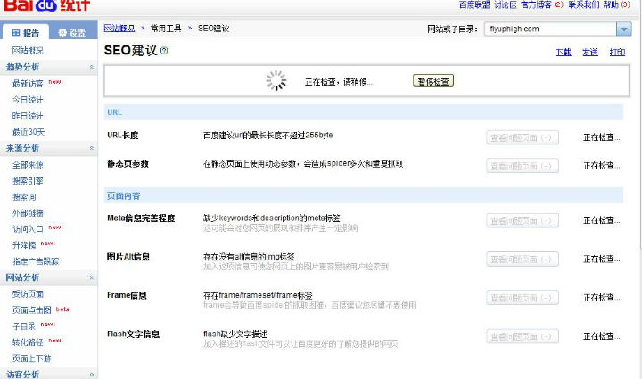

今天试了下百度统计里面的"SEO建议"功能，居然神奇般的可以使用了。

还记得前些日子安装了百度统计代码，正想试试最新的“SEO建议”功能的时候，总是出现错误：“可供检查的页面数量过少，建议您至少在检查范围内的32个页面安装百度统计代码”错误.
现在分析来可能有几种原因：
<1>. 网站刚安装百度统计代码，比如安装不到一两天时间。我基本在上个月刚开博的时候就安装了，到前几天还是不能使用“SEO建议”功能，所以个人觉得不是这个原因。
<2>. 网站本身页面不足。单说静态页面的话，一篇文章就一个页面了，那我的起码也有60个左右了吧。要是不说静态页面的话，那wordpress本身就只有一个页面了，更不可能。所以应该也不是页面不足的原因。
<3>. 网站访问量低，PV低。 我估计这个有些可能，因为上个月到前几天为止，基本没什么人访问的。
<4>. 百度收录页面少于32个。这个我是最认为有可能的，因为我的博文这几天才被百度正常收录的，所以这个可能性大一点。
总结：结合第3、4点，用一句话归纳就是——“内容为王”。百度不是傻子，你网站不是垃圾站，有内容了，百度自然就收录了，PV也就自然上去了。不过话说回来，百度"SEO建议"其实跟谷歌的网站管理员工具webmasters差不多类似的，是没什么必要瞎折腾那么多。